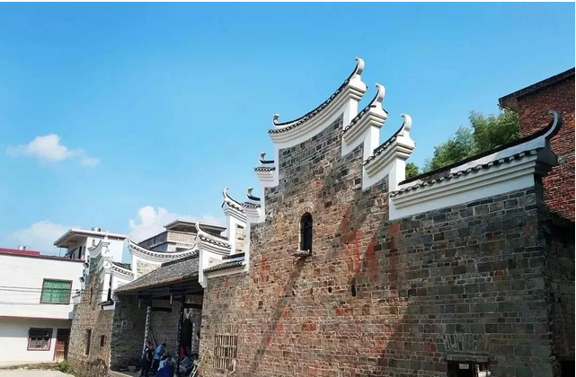
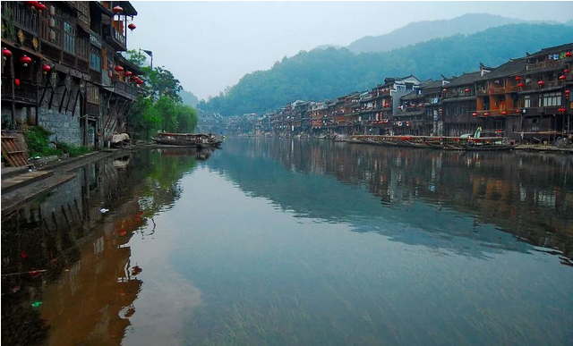
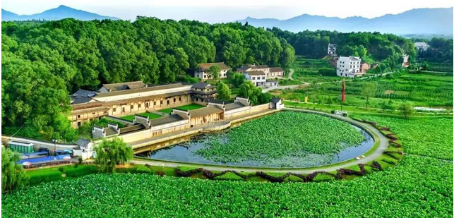

-

湘南地区
民居装饰上采用了一些木雕、石雕、凌雕等相互结合的形式，为民居增添了些许新意和特色。古井、宝塔、石板路等特色建筑也随处可见。湘南建筑形式还受到西方建筑的影响，瓶式栏杆、山花、拱券，柱头等西洋装饰能够在民居中寻得身影，这也是湘南传统民居的一个主要特色。
-
 湘北
湘北
湘北地处洞庭湖平原，平坦开阔，故湘北民居在布局上比较讲究中轴线对称。位于湖南岳阳以东的渭洞笔架山下的张谷英村是湘北民居的杰出代表，这个明代繁衍至此的小村，以始祖张谷英的名字命名。这里“家家相连，户户相通”，连体的建筑形式，中轴线设计理念，使张谷英村被誉为“民间故宫”。巷道纵横交错，檐内雕梁画栋，栩栩如生，体现出高超的建筑技艺。
-

湘西
湘西是少数民族聚居地区，有苗族、土家族、侗族、瑶族，其传统民居依山傍水、灵活变化，生动、直观地体现出多彩的民族文化和地方特色。多建于倾斜度较大的山腰上或河岸边，上层楼面伸出下层屋基1米多，悬空部分为走廊，有栏杆，整个建筑显得轻巧和空灵。我们最熟悉的“吊脚楼”就是湘西民居最为典型的建筑。大片面积的民居面和大型祠庙会馆建筑面的层叠与穿插能够创造丰富多彩的空间。这里的民居多为通风性能好且干爽的吊脚楼和四合院组成
湖南的建筑不仅仅如此，更多的建筑等你来发现>>
- 